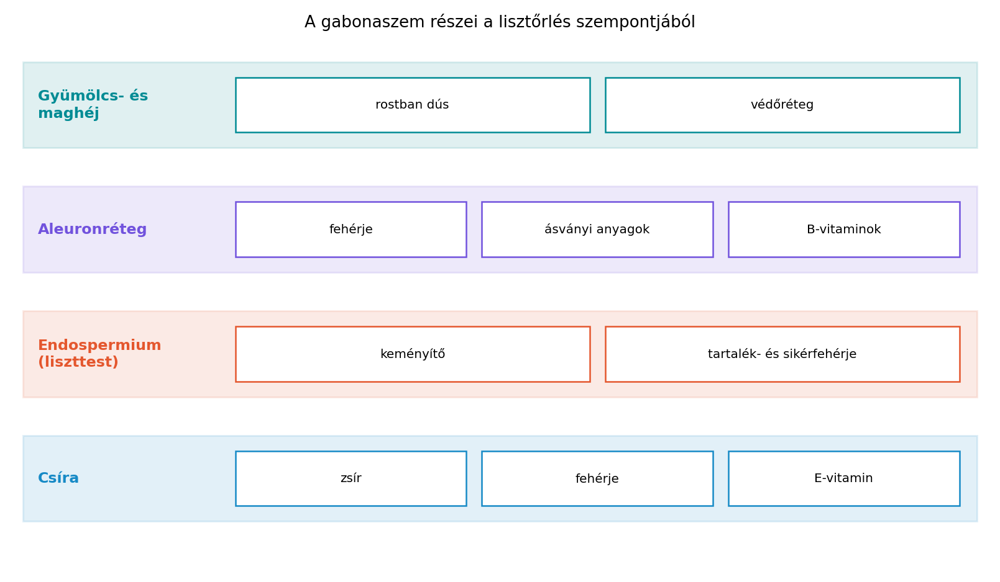

A pék számára a gabonaszem nem csupán „alapanyag”, hanem egy kis üzem. Abban vannak a tészta építőkövei: a sikérképző fehérjék, a keményítő, az enzimek, a rost és az ásványi anyagok. Ha tudod, hol helyezkedik el a héj, az aleuronréteg, az endospermium és a csíra, akkor érteni fogod, miért más a BL 55 liszt, a teljes kiőrlésű liszt és a korpa viselkedése, és miért nem mindegy, hogy egy őrleményből mennyi a héjrész. Ez az alfejezet a liszt titkainak térképét adja a kezedbe: megmutatja a szem részeit, azok összetételét, és az őrlés során végbemenő szétválasztást.
Képzelj el egy gabonaszemet, például egy búzaszemet, mint egy apró, réteges tárolóedényt, amelyben a növény életet csomagolt. A külső réteg a csomagolóanyag: véd a sérüléstől, a kórokozóktól és a vízveszteségtől. A belső, legnagyobb rész a lisztes mag, amely a csírázáshoz szükséges energia raktára, főként keményítő formájában. Az energia-raktár és a védőréteg között egy sejtréteg húzódik, amely ásványi anyagokban, vitaminokban és fehérjében gazdag. A szem alján pedig ott a csíra, amelyből a növény indulna ki: ez a zsírban, vitaminban és enzimekben koncentrált rész. Az őrlés során a malom ezeket a részeket választja szét és keveri vissza meghatározott arányokban; a liszt színe, hamutartalma és sütőipari viselkedése ezen a szétválasztáson múlik.

A rétegábra a malmi szétválasztás logikáját mutatja, a valódi elhelyezkedést a metszeti rajz: a csíra nem a szem közepén, hanem a szem alján, a liszttest mellett ül, a szem hasi oldalán pedig mély barázda fut végig.
A HTML-változatban a részekre mutatva kiemelődik az adott rész és összetétele, a „BL 55 / BL 80 / Teljes kiőrlés” gombokkal pedig megnézheted, mely részek kerülnek az egyes lisztekbe.
A továbbiakban a részeket részletesen is jellemezzük.
Definíció. A gabonaszem a kalászos gabona (például búza, rozs, tönköly, árpa) termése, amely botanikai értelemben szemtermés. Sütőipari szempontból a búzaszem a legfontosabb, de a rozsszem is meghatározó a rozskenyereknél és a rozsos kenyereknél.
A búzaszem részei kívülről befelé haladva:
Összetétel. A gabonaszem kémiai összetétele fajtánként, évjáratonként és termesztési körülményektől függően változik. Tanulási példaként a búzaszem átlagos összetétele körülbelül:
| Összetevő | Búzaszem (tömegszázalék) | Fő helye a szemben |
|---|---|---|
| Keményítő | 55–65 | endospermium |
| Fehérje (nyersfehérje) | 9–14 | endospermium, aleuron, csíra |
| Víz | 12–15 | minden részen |
| Élelmi rost (összes) | 10–13 | héj, aleuron (nyersrostként mérve 2–3) |
| Zsír | 1,5–2,5 | főként csíra |
| Ásványi anyag (hamu) | 1,5–2,0 | aleuron, héj |
A fenti számok jellemző sávok, nem hatósági előírások, a sávok nem összegezhetők pontosan 100 %-ra, és a nyersrost-érték (2–3 %) a régi módszerrel mért, a rostnak csak egy részét mutató adat, és az egyes szállítmányoknál a laborvizsgálat adja a valós értéket (ellenőrizendő: az adott szállítmány specifikációja).
Fontos. A rozsszem hasonló felépítésű, de a mérete és a színárnyalata eltér, és a rozs fehérjéi kevésbé képeznek olyan rugalmas sikérvázat, mint a búza. Ezért a rozsliszt tésztája viszkózusabb, és a rozsos kenyerek készítése során savanyú kovászt, nagyobb tésztakitermelést és más tésztakezelést használunk, ezt a Kovászolás és a Rozsos kenyér alfejezetekben tanuljuk.
Definíció. Az őrlés olyan mechanikai folyamat, amelynek során a gabonaszemet feltárják, a külső héjrészeket elválasztják a liszttesttől, és a liszttestből lisztet, darát, később finom lisztfrakciókat készítenek. A kiőrlési fok azt mutatja meg, hogy a gabonaszem tömegéből mekkora hányad kerül be az őrleménybe. Ha a teljes szemet, annak minden részével együtt megőrlik, a kiőrlési fok 100%.
A kiőrlési fokot gyakran százalékban adják meg:
Példa. Ha 1000 kg tiszta búzából 760 kg BL 80 lisztet nyernek, akkor a kiőrlési fok:
Minél nagyobb a kiőrlési fok, annál nagyobb a lisztben a héjrészek, az aleuronréteg és az ásványi anyagok aránya. A teljes kiőrlésű liszt kiőrlési foka elvileg 100%, de a gyakorlatban a tisztítás és a malmi veszteségek miatt kissé kevesebb is lehet. Az ilyen liszt sötétebb lesz, több rostot és ásványi anyagot tartalmaz, ugyanakkor a benne lévő korparészek a tészta térfogatát és a tészta szerkezetét is befolyásolják.
A korszerű malmi őrlés soklépcsős, de a tanulói szinten elegendő az alapgondolat:
A feltáró járat hengerei rovátkoltak, a simító (redukáló) járatéi simák; az állítható hengerrés szabja meg, mekkora darabokra törik a szem. A HTML-változat lépésenként mutatja a betáplálást, a nyírást, a feltörést és a szitálást, valamint a szűk és a tág rés hatását.
A malmi művelet során a héjrészek nem azonosíthatók minden egyes lisztfrakcióban; a frakciókat az ásványianyag-tartalom (hamu) alapján is jellemzik. A liszt színe és hamutartalma közötti kapcsolatot a Lisztfajták, liszttípusok és jelölésük alfejezetben tanuljuk.
Higiénia. Az őrlés nem sütőüzemi művelet, de a pék számára kritikus a liszt átvétele és tárolása. A lisztnek tisztának kell lennie, az átvételnél az idegen anyagok, a kártevők, a dohos szag és a csomagolás sérülése is ellenőrizendő (ellenőrizendő: a pékség HACCP-terve, a 852/2004/EK rendelet szerinti jó higiéniai gyakorlat). Az őrlésnél keletkező korpa és teljes kiőrlésű liszt zsírosabb összetevői miatt a teljes kiőrlésű termékek eltarthatósága és tárolási igénye eltér a fehér lisztekétől.
Definíció. A teljes kiőrlésű őrlemény olyan gabonaőrlemény, amely a szem minden részét tartalmazza: az endospermiumot, a csírát és a héjrészeket. A korpa a malmi szétválasztás során leválasztott külső héjrész, amely rostban, aleuronban és ásványi anyagokban gazdag. A csíra a szem embriója; a malom a fehér lisztekből eltávolítja, mert magas zsírtartalma miatt rontaná a liszt stabilitását.
A teljes kiőrlésű búzaliszt és a fehér liszt közötti különbség szemléletesen a kiőrlési fokban és a hamutartalomban mutatkozik:
| Őrlemény | Kiőrlési fok (tanulási példa) | Hamutartalom (szárazanyagra, jellemző) | Szín | Rosttartalom |
|---|---|---|---|---|
| BL 55 búzafinomliszt | kb. 60–65 | kb. 0,55% | világos | alacsony |
| BL 80 fehér kenyérliszt | kb. 75–80 | kb. 0,80% | kissé sötétebb | közepes |
| Teljes kiőrlésű liszt | kb. 100 | kb. 1,5–2,0% | korpás, barnás | magas |
A fenti számok technológiai tájékoztató értékek; a pontos lisztjelölés és hamutartalom-határ a Magyar Élelmiszerkönyv és a lisztvizsgálati szabványok szerint alakul (ellenőrizendő: hatályos Magyar Élelmiszerkönyv, MSZ lisztvizsgálati szabványok).
Figyelem. A „teljes kiőrlésű” megnevezés nem egyenlő a kézműves, a sötét színű vagy a magvas kenyérrel. A sütőüzemben a „teljes kiőrlésű” állítást csak olyan termékre szabad használni, amelynél az őrlemény valóban a teljes szemből készült, és a jelölés az előírt feltételeknek megfelel (ellenőrizendő: 1169/2011/EU rendelet, Magyar Élelmiszerkönyv, hatósági útmutató). A teljes kiőrlésű liszt több élelmi rostot és ásványi anyagot visz a termékbe, de a korpa egyben rontja a sikérváz folytonosságát, ezért a teljes kiőrlésű tészták gyakran kisebb térfogatot adnak, tömöttebbek, és több vizet vesznek fel.
Allergén. A búza, a rozs, az árpa, a zab (sokszor gluténszennyezéssel) és a belőlük készült lisztek glutént tartalmaznak, kivéve a megfelelően előállított gluténmentes zab vagy a gluténmentes őrlemények. A sütőüzemben a búzaliszt a legnagyobb mennyiségű allergén nyersanyag, ezért a gluténmentes termékeknél a keresztszennyeződés ellen külön eljárásrend kell (ellenőrizendő: a pékség allergénkezelési terve). Ezt a Diétás és allergénmentes sütőipari termékek alfejezetben tanuljuk.
Adott: Egy malom 500 kg tiszta búzából 325 kg búzalisztet nyer.
Keresett: A liszt kiőrlési foka.
Számítás:
Ellenőrzés: A 65% egy fehér lisztre jellemző kiőrlési érték, nagyságrendben elképzelhető. A héjrészek nagy részét tehát elválasztották.
Adott: Egy pékség két lisztet hasonlít össze: BL 55 lisztet (hamutartalma 0,55%) és teljes kiőrlésű lisztet (hamutartalma 1,8%). A liszttestben a hamu alacsony, a héj és az aleuronrész a hamutartalom nagy részét adja.
Értelmezés: Minél nagyobb a kiőrlési fok, annál nagyobb a hamutartalom és a rosttartalom. A teljes kiőrlésű liszt tehát nemcsak sötétebb, hanem ásványi anyagokban és élelmi rostban gazdagabb. A sütőiparban ezt nem hibaként kezeljük: a rozsos és teljes kiőrlésű termékeknél éppen ez a tápanyagtartalom a cél.
Egy pékségben a pék azt tapasztalta, hogy a hajnalban készített búzakenyér egyik nap szép, világos bélzetet adott, máskor szürkésebb, tömöttebb lett. A kezdeti gyanú a dagasztásra vagy a kelesztésre irányult. Az átvételi naplóból kiderült, hogy a második napi liszt színe sötétebb volt, bár a csomagoláson ugyanaz a jelölés szerepelt. A lisztvizsgálat igazolta, hogy a második szállítmány hamutartalma magasabb volt, ami a kiőrlési fok növekedésére utalt. A tanulság: a liszt minőségét nemcsak a jelölésből, hanem a színből, a hamutartalomból és esetenként a sütési próbából is ellenőrizni kell. A liszt eltérését a gyártmánylapon és a dagasztási paraméteren is figyelembe kell venni, például a vízfelvételt módosítani kell.
1. feladat (A, alap): Sorold fel a búzaszem négy fő részét, és mindegyikhez írj két jellemző összetevőt.
2. feladat (A, alap): Írd le, mit jelent a 100%-os kiőrlési fok, és miért kapcsolódik a teljes kiőrlésű liszthez.
3. feladat (B, közepes): Egy malom 800 kg tisztított búzából 520 kg BL 55 lisztet nyer. Mennyi a kiőrlési fok? Mennyi maradék hasznosítható anyag (a kiőrlésből kikerülő rész) keletkezik elvileg ebből a tételből, ha a veszteségeket elhanyagoljuk?
4. feladat (B, közepes): Hasonlítsd össze a BL 55 liszt és a teljes kiőrlésű liszt technológiai viselkedését a tésztakészítés során: vízfelvétel, tésztaváz, térfogat, szín.
5. feladat (C, elemző): Egy pékség teljes kiőrlésű kenyeret készít, de a termék tömött lesz. A liszt valóban teljes kiőrlésű, a kelesztési idő nem változott. Milyen technológiai hibákat keresnél a receptúra és a dagasztás területén? Indokold a választ.
6. feladat (D, gyakorlati/átvitel): Képzeld el, hogy 1000 kg búzát őrölnek. A malom 62% BL 55, 15% korpa és 2% csíra, a maradék pedig takarmányliszt. Számítsd ki az egyes frakciók tömegét. Ezt követően a BL 55 lisztből kenyeret sütsz, és a lisztre vetített víz 62 tömegszázalék. Mennyi vizet adagolsz a tésztába? A feladat a Százalékszámítás és a lisztre vetített (sütőipari) százalék alfejezetben tanultakat alkalmazza.
A négy fő rész és jellemzők:
A 100%-os kiőrlési fok azt jelenti, hogy az őrlemény a teljes tisztított gabonaszemet tartalmazza, elvileg minden részt. Ez a teljes kiőrlésű liszt: benne az endospermium, a héjrészek, az aleuronréteg és a csíra is megtalálható.
Az elvileg kikerülő rész:
A kiőrlési fok 65%, a kiőrlésből kikerülő rész 280 kg.
Lehetséges hibák:
A javítás a receptúra vízfelvételének és a dagasztási időnek a módosítása, valamint a kelesztés ellenőrzése.
A frakciók tömege:
A BL 55 lisztre vetített víz:
A lisztre vetített vízmennyiség tehát 384 kg.
A gabonaszem az őrlés szempontjából réteges szerkezetű. A külső héj rostban dús, az aleuronréteg fehérjében, ásványi anyagokban és vitaminokban gazdag, az endospermium a fehér liszt fő tömegét adja, főként keményítővel és a búza esetében sikérképző fehérjékkel; a csíra zsírban, fehérjében és enzimekben koncentrált. Az őrlés során ezeket a részeket mechanikailag szétválasztják, majd a kívánt liszttípusnak megfelelően keverik. A kiőrlési fok azt mutatja meg, hogy a liszt a szem tömegéből mekkora hányadot tartalmaz. Minél nagyobb a kiőrlési fok, annál nagyobb az őrlemény hamu-, rost- és ásványianyag-tartalma, sötétebb a színe, és annál több a héjrész a lisztben. A teljes kiőrlésű liszt a teljes szemből készül, míg a BL 55-höz hasonló fehér lisztből a héj- és csírarészeket elválasztják. A kapott fogalmak: szemből a héj, aleuron, endospermium, csíra, kiőrlési fok, teljes kiőrlésű őrlemény, korpa, csíra, hamutartalom – ezeket használjuk a Lisztfajták, liszttípusok és jelölésük alfejezetben, ahol a magyar lisztjelölést és a hamutartalom szerinti liszttípusokat tanuljuk.
A fejezetben a gabonaszem felépítése és az őrlés alapjai a sütőipari technológia stabil, tankönyvi szintű ismeretanyaga. A kiőrlési fok, a hamutartalom, a liszttípus és a jelölés kapcsolatát a kiadás előtt ellenőrizni kell a Magyar Élelmiszerkönyv hatályos sütőipari előírásaiban, a lisztvizsgálati szabványokban (MSZ EN ISO sorozat), továbbá a lisztjelölésre és a teljes kiőrlésű termékek jelölésére vonatkozó uniós előírásokban (1169/2011/EU). Az összetételi százalékok tájékoztató jellegűek, és a konkrét szállítmány specifikációjától függenek. A HACCP- és allergén-állításokat a pékség saját HACCP-tervéhez és allergénkezelési utasításához kell igazítani.